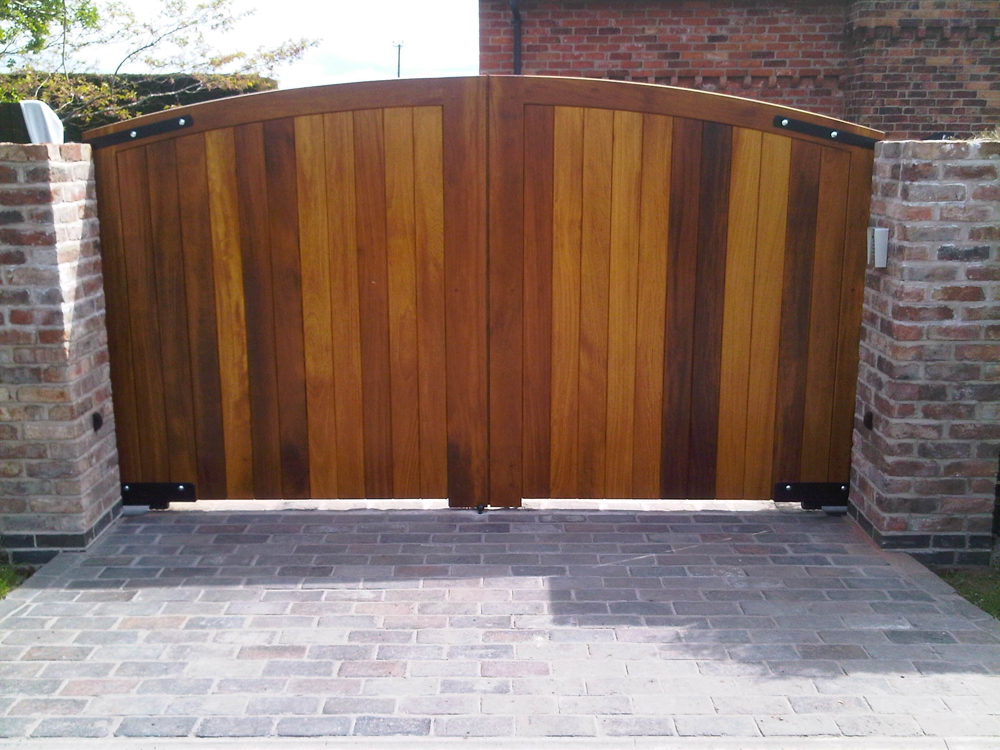
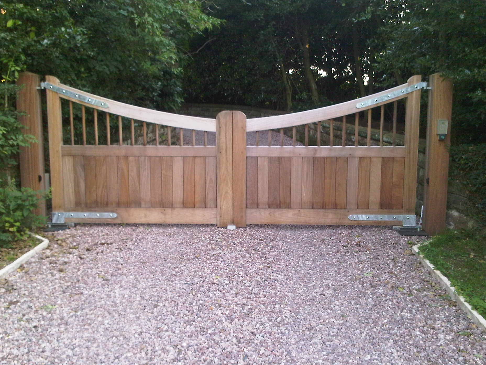
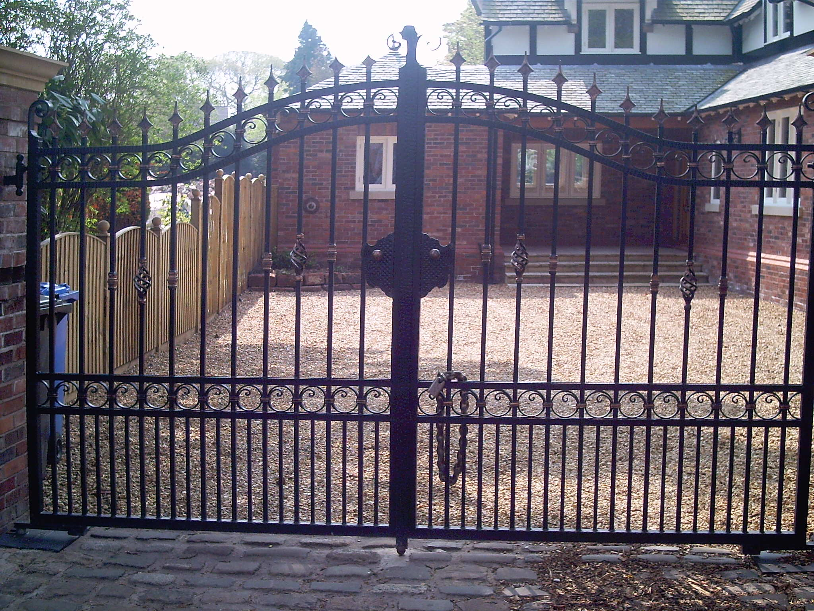
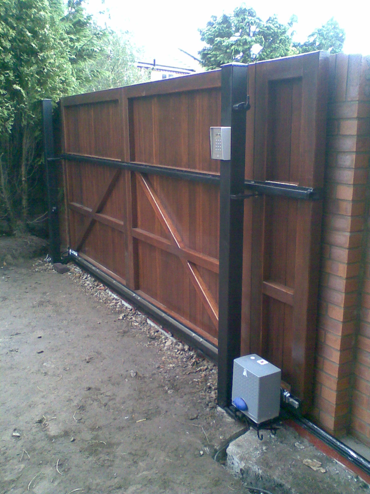
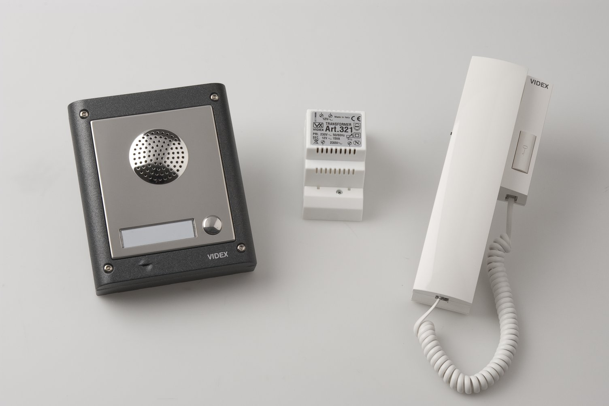
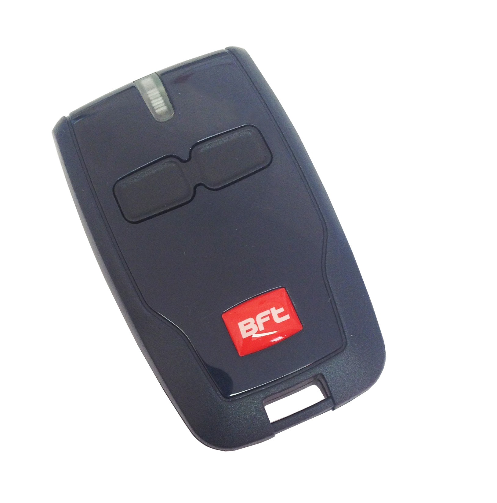

Timber
Wooden gates
Some of the finest timber gates available in the UK. Made to measure in softwood or a choice of hardwoods, solid or open, arched or straight.
Made to measure wooden and iron gates, automated and fitted from our workshop in Antrobus, Cheshire.

Every gate is made to measure, in a size and design to suit you. Here is some of our own work.

Some of the finest timber gates available in the UK. Made to measure in softwood or a choice of hardwoods, solid or open, arched or straight.

Individually made wrought iron gates with a wide range of options.

Stronger materials and heavy duty motors, for gates that get heavy use every day.
We visit, measure up and look at how the gate will be used, by whom, and what could get in its way.
A gate designed for your opening, your house and your budget, with a free quotation.
Built to the highest specification in our own workshop.
Hung, automated and fitted with the right safety devices, then handed over to you.
Safety is the very highest priority when installing or maintaining an automatic gate system.
Every survey includes a risk assessment. Older gates fitted before the regulations can usually be upgraded with modern safety devices.

AutomationMotors for swing and sliding gates, and openers for garage doors, new or on what you already have.

EntrySpeak to whoever is at the gate and let them in from the house.

ControlOne press from the car. No getting out in the rain.
"They listened to what we were wanting to achieve, added some helpful suggestions that hadn't occurred to us, and the final result has completely transformed our home."
"We are delighted with the new gates manufactured and installed by Platinum Automated Entries."